기계조립산업기사 (2010-05-09 기출문제)
1과목: 기계가공법 및 안전관리
1. 드릴링 머신의 안전사항에서 틀린 것은?
- 장갑을 끼고 작업을 하지 않는다.
- 가공물을 손으로 잡고 드릴링하지 않는다.
- 얇은 판의 구멍 뚫기에는 나무 보조판을 사용한다.
- 구멍 뚫기가 끝날 무렵은 이송을 빠르게 한다.
(정답률: 알수없음)

2. 아래 그림의 연삭가공은 어떤 작업을 나타낸 것인가?
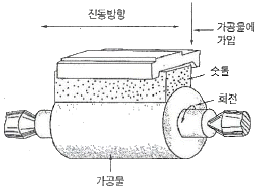
- 수퍼피니싱
- 호닝
- 래핑
- 버핑
(정답률: 73%)
3. 밀링작업에서 하향절삭에 비교한 상향절삭의 특성에 대한 설명으로 틀린 것은?
- 날끝이 일감을 치켜 올리므로 일감을 단단히 고정해야 한다.
- 백래시 제거 장치가 없으면 가공이 곤란하다.
- 하향절삭에 비해 가공면이 깨끗하지 못하다.
- 공구의 수명이 짧다.
(정답률: 알수없음)
4. 나사의 유효지름을 측정할 수 없는 것은?
- 나사 마이크로미터
- 투영기
- 공구 현미경
- 이 두께 버니어 캘리퍼스
(정답률: 75%)
5. 기차 바퀴와 같이 길이가 짧고 직경이 큰 공작물을 선삭하기에 가장 적합한 선반은?
- 터릿선반
- 정면선반
- 수직선반
- 모방선반
(정답률: 59%)
6. 기어 가공을 위해 사용되는 공구가 아닌 것은?
- T홀 커터
- 피니언 커터
- 호브
- 래크 커터
(정답률: 93%)
7. 수기 가공 용구의 센터 펀치에 대해서 기술한 것으로 틀린 것은?
- 펀치의 선단은 열처리를 한다.
- 드릴로 구멍을 뚫을 자리 표시에 사용한다.
- 선단은 약 40°로 한다.
- 펀치의 선단을 목표물에 수직으로 거정하고 펀칭한다.
(정답률: 64%)
8. 연삭가공에서 내면연삭의 특성에 대한 설명으로 틀린 것은?
- 연삭숫돌의 지름은 가공물의 지름보다 커야 한다.
- 외경 연삭에 비하여 숫돌의 마모가 많다.
- 숫돌 축의 회전수가 빨라야 한다.
- 숫돌 축은 지름이 적기 때문에 가공물의 정밀도가 다소 떨어진다.
(정답률: 46%)
9. 밀링작업을 하고 있는 중에 지켜야 할 안전사항에 해당되지 않는 것은?
- 절삭공구나 가공물을 설치할 때는 반드시 전원을 켜고 한다.
- 주축 속도를 변속시킬 때는 반드시 주축이 정지한 후 변환한다.
- 가공물을 바른 자세에서 단단하게 고정한다.
- 기계 가동 중에는 자리를 이탈하지 않는다.
(정답률: 92%)
10. 선반의 부속품 중에서 돌리개(dog)의 종류가 아닌 것은?
- 평행(클램프) 돌리개
- 곧은 돌리개
- 브로치 돌리개
- 굽은(곡형) 돌리개
(정답률: 80%)
11. 센터리스 연삭에 특성에 대한 설명으로 틀린 것은?
- 중공(中空)의 가공을 연삭이 곤란하다.
- 연삭 작업에 숙련을 요구하지 않는다.
- 연삭 여유가 작아도 된다.
- 연삭숫돌의 폭이 크므로 연삭숫돌 지름의 마열이 적다.
(정답률: 60%)
12. 정반위에 높이의 차이가 100m인 2개의 게이지 블록위에 길이가 200mm인 사인바를 놓았을 때 정반면과 사인바와 이루는 각은?
- 20°
- 30°
- 45°
- 60°
(정답률: 24%)
13. 절삭 공구의 구비조건에 해당되지 않는 것은?
- 강인성이 클 것
- 마찰계수가 클 것
- 내마모성이 높을 것
- 고온에서 경도가 저하되지 않을 것
(정답률: 75%)
14. 도금을 응용한 방법으로 모델을 음극에 전착시킨 금속을 양극에 설치하고 전해액 속에서 전기를 통전하여 적당한 두께로 금속을 입히는 가공방법은?
- 전주가공
- 초음파가공
- 전해연삭
- 레이져가공
(정답률: 46%)
15. 공작물을 절삭할 때 정삭온도에 의한 측정방법으로 틀린 것은?
- 공구 현미경에 의한 측정
- 칩의 색깔에 의한 측정
- 열량계에 의한 측정
- 열전대에 의한 측정
(정답률: 70%)
16. 밀링 머신에서 가장 큰 규격의 호칭번호는? (단, 호칭번호는 새들의 이동범위로 정한다.)
- 0호
- 1호
- 3호
- 5호
(정답률: 60%)
17. CNC 공작기계의 서보기구의 종류에 속하지 않는 것은?
- 개방회로 방식
- 하이브리드 서보 방식
- 폐쇄회로 방식
- 단일회로 방식
(정답률: 70%)
18. 램이 상하로 직선운동을 하며 급속귀환 장치가 있는 공작기계는?
- 세이퍼
- 슬로터
- 브로치
- 플레이너
(정답률: 36%)
19. 리머작읍을 할 때에는 드릴작업에 비하여 어떻게 하는 것이 원칙인가?
- 고속에서 절삭하고 이송을 크게
- 고속에서 절삭하고 이송을 작게
- 저속에서 절삭하고 이송을 크게
- 저속에서 절삭하고 이송을 작게
(정답률: 70%)
20. 선반이나 연삭기 작업에서 봉재의 중심을 구하기 위해 금긋기 작업을 위해 사용되는 공구와 관계가 먼 것은?
- V블록
- 서피스 게이지
- 캘리퍼스
- 마이크로미터
(정답률: 47%)
2과목: 기계설계 및 기계재료
21. Ni에 Cr 13-21%와 Fe 6.5%를 함유한 우수한 내열, 내식성을 가진 합금은?
- 게이지용강
- 스테인리스강
- 인코넬
- 엘린바
(정답률: 34%)
22. 용융 금속이 응고할 때 불순물이 가장 많이 모이는 곳으로 최후에 응고하게 되는 곳은?
- 결정입계
- 결정입내의 중심부
- 결정입내와 입계
- 결정입내
(정답률: 47%)
23. Fe-C계 상태도에서 3개소의 반응이 있다. 옳게 설명한 것은?
- 공정-포정-편정
- 포석-공정-공석
- 포정-공정-공석
- 공석-공정-편정
(정답률: 77%)
24. 다음 철강 재료 중 담금질 열처리에 의해 경화되지 않는 것은?
- 순철
- 탄소강
- 탄소 공구강
- 고속도 공구강
(정답률: 64%)
25. 초소성 재료에 대한 설명으로 틀린 것은?
- 미세결정입자 초소성과, 변태 초소성으로 나누어진다.
- 고온에서의 높은 강도가 특징이다.
- 초소성 재료로서 Al-Zn 합금은 플라스틱 성형용 금형을 제작하는데 실용화되고 있다.
- 결정입자가 보통 아주 미세하다.
(정답률: 50%)
26. 다음 중 선팽창계수가 큰 순서로 올바르게 나열된 것은?
- 알루미늄＞구리＞철＞크롬
- 철＞크롬＞구리＞알루미늄
- 크롬＞알루미늄＞철＞구리
- 구리＞철＞알루미늄＞크롬
(정답률: 86%)
27. 주철의 마우러의 조직도를 바르게 설명한 것은?
- Si와 Mn량에 따른 주철의 조직 관계를 표시한 것이다.
- C와 Si량에 따른 주철의 조직 관계를 표시한 것이다.
- 탄소와 흑연량에 따른 주철의 조직 관계를 표시한 것인다.
- 탄소와 Fe3C량에 따른 주철의 조직 관계를 표시한 것이다.
(정답률: 70%)
28. 형상기억합금의 내용과 관계가 먼 것은?
- 형상 기억 효과를 나타내는 합금은 오스테나이트 변태를 한다.
- 어떠한 모양을 기억할 수 있는 합금이다.
- 소성변형된 것이 특정 온도 이상으로 가열하면 변형되기 이전의 원래 상태로 돌아가는 합금이다.
- 형상 기억합금의 대표적인 합금은 Ni-Ti 합금이다.
(정답률: 58%)
29. Fe-Mn, Fe-Si으로 탈산시킨 것으로 상부에 작은 수축관과 소수의 기포만이 존재하며 탄소 함유량이 0.15~0.3% 정도인 강은?
- 킬드강
- 세미킬드강
- 캡드강
- 림드강
(정답률: 50%)
30. 알루미늄-규소계 합금으로 알팩스라고도 하며, 주조성은 좋으나 절삭성이 좋지 않은 것은?
- 라우탈
- 콘스탄탄
- 실루민
- 하이드로날륨
(정답률: 10%)
31. 7kNㆍm의 비틀림 모멘트와 14kNㆍm의 굽힘 모멘트를 동시에 받는 축의 상당ㄷ 굽힘 모멘트는 몇 kNㆍm인가? (문제 오류로 실제 시험에서는 모두 정답처리 되었습니다. 여기서는 1번을 누르면 정답 처리 됩니다.)
- 1⑤.83
- 211.65
- 15.65
- 31.46
(정답률: 47%)
32. 평벨트에 비해 V벨트 전동의 특징이 아닌 것은?
- 미끄럼이 적고, 속도비가 크다.
- 바로걸기로만 가능하다.
- 축간거리를 마음대로 할 수 있다.
- 운전이 정숙하고 충격을 완화한다.
(정답률: 74%)
33. 기계구조물 등을 콘크리트 바닥에 설치하는데 사용되는 볼트에 해당하는 것은?
- 스테이볼트
- 아이볼트
- 나비볼트
- 기초볼트
(정답률: 34%)
34. 성크 키의 길이가 150mm, 키에 발생하는 전단하중은 60kN, 키의 너비와 높이와의 관계는 b=1.5h라고 할 때 허용 전단응력 20MPa라 하면 키의 높이는 약 몇 mm 이상이어야 하는가? (단, b는 키의 너비, h는 키의 높이이다.)
- 8.2
- 10.5
- 13.3
- 17.9
(정답률: 24%)
35. 축지름 5cm, 저널 길이 10cm인 상태에서 300rpm으로 전동축을 지지하고 있는 미끄럼 베어링에서 P=4000N의 레이디얼 하중이 작용할 때 베어링 압력은 약 몇 MPa인가?
- 0.6
- 0.7
- 0.8
- 0.9
(정답률: 57%)
36. 지름 14mm의 연강봉에 8000N의 인장하중이 작용할 때 발생하는 응력은 약 몇 N/mm2인가?
- 15
- 23
- 46
- 52
(정답률: 40%)
37. 볼나사(ball screw)의 장점에 해당되지 않는 것은?
- 마찰이 매우 적고, 기계효율이 높다.
- 예압에 의하여 치면놀이(backlash)를 작게 할 수 있다.
- 미끄럼 나사보다 내충격성 및 감쇠성이 우수하다.
- 시동 토크, 또는 작동 토크의 변동이 적다.
(정답률: 58%)
38. 저널 베어링에서 사용되는 페트로프의 식에서 마찰 저항과의 관계를 설명한 것으로 틀린 것은?
- 베어링 압력이 클수록 마찰저항은 커진다.
- 축의 반지름이 클수록 마찰저항은 커진다.
- 유체의 절대점성계수가 클수록 마찰저항은 커진다.
- 회전수가 클수록 마찰저항은 커진다.
(정답률: 42%)
39. 스프링의 변형에 대한 강성을 나타내는 것에 스프링상수가 있다. 하중이 W[N]일 때 변위량을 δ[mm]라 하면 스프링 상수 k[N/mm]는?
- k=δ/W
- k=δW
- k=W/δ
- k=w-δ
(정답률: 47%)
40. 유연성 커플링(flexible coupling)의 종류가 아닌 것은?
- 기어 커플링
- 롤러 체인 커플링
- 다이어프램 커플링
- 머프 커플링
(정답률: 54%)
3과목: 기계제도 및 CNC 공작법
41. 다음 중 가는 실선을 잘못 사용하고 있는 것은?
- 투상도의 어느 부분이 평면이라는 것을 나타내기 위해 가는 실선으로 대각선을 그렸다.
- 단면한 부위의 해칭선을 가는 실선으로 그렸다.
- 가공 전이나 가공 후의 모양을 가는 실선으로 그렸다.
- 물체 내부에 회전 단면을 가는 실선으로 그렸다.
(정답률: 50%)
42. 그림과 같이 가공된 축의 테이퍼값은 얼마인가?
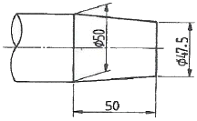
- 1/5
- 1/10
- 1/20
- 1/40
(정답률: 62%)
43. 대상물의 구멍, 홈 등 한 국부만의 모양을 도시하는 것으로 충분한 경우 그림과 같이 도시하는 투상도는?
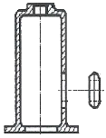
- 보조 투상도
- 국부 투상도
- 가상 투상도
- 부분 투상도
(정답률: 65%)
44. 경사면에 평행한 투상면을 설치하고 이것에 필요한 부분을 투상하여 물체의 실제 모양을 나타내는 투상법은?
- 경투상도
- 등각투상도
- 사투상도
- 보조투상도
(정답률: 60%)
45. 그림과 같은 입체도를 화살표 방향에서 본 투상도로 가장 적합한 것은?
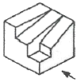
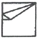
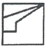
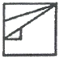
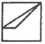
(정답률: 92%)
46. 핸들이나 바퀴 등의 암 및 링, 리브 등의 절단선의 연장선 위에 90° 회전하여 실선으로 그리는 단면도는?
- 온 단면도
- 한쪽 단면도
- 회전도시 단면도
- 조합 단면도
(정답률: 85%)
47. 재료 기호가 “STD 10"으로 표기되었을 경우 이 재료는 KS에서 무슨 재료인가?
- 기계구조용 합금강 강재
- 탄소 공구강 강재
- 기계 구조용 탄소 강재
- 합금 공구강 강재
(정답률: 62%)
48. 표면의 결 도시방법 및 면의 지시기호에서 가공으로 생긴 모양의 약호로 “C"로 표시된 것은 어떤 의미인가?
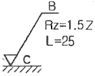
- 가공으로 생긴 선이 거의 방사상
- 가공으로 생긴 선이 다방면으로 교차
- 가공으로 생긴 선이 거의 동심원
- 가공으로 생긴 선이 거의 무방향
(정답률: 93%)
49. 다음 중 복렬 자동조심 볼 베어링에 해당하는 베어링 간략기호는?
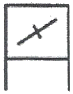
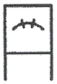
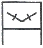
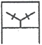
(정답률: 60%)
50. 모양 및 위치의 정밀도 허용값을 도시한 것 중 올바르게 나타낸 것은?
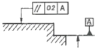
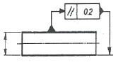
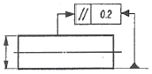
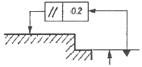
(정답률: 알수없음)
51. 다음의 CNC선반 프로그램에서 가공부의직경이 ø50일 때 주축의 회전수는 약 몇 rpm인가?
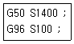
- 1500
- 727
- 1400
- 637
(정답률: 43%)
52. CNC선반에서 공구보정(offset) 번호 4번을 선택하여, 2번 공구를 사용하려고 할 때 공구지령으로 옳은 것은?
- TO204
- TO402
- T2040
- T4020
(정답률: 63%)
53. 머시닝센터에서 1줄 나사를 가공을 하고자 할 때 나사의 피치를 P(mm), 공구 회전수를 N(rpm)이라고 하면 이송속도 F(mm/min)를 구하는 식은?
- F=PㆍN
- F=N/P
- F=P/N
- F=60P/N
(정답률: 72%)
54. CNC공작기계의 절삭 제어방식 중 드릴링(drilling) 작업에 적절한 제어방식은?
- 위치결정 제어
- 연속절삭 제어
- 원호절삭 제어
- 윤곽절삭 제어
(정답률: 65%)
55. CNC 공작기계를 운전하는 중에 퉁동 등 위급한 상태가 우려될 때 가장 우선적으로 취해야 할 조치법은?
- main switch의 off 버튼을 누른다.
- CNC 전원(power) 스위치를 off한다.
- 배전반의 회로도를 점검한다.
- 조작반의 비상정지(emergency stop) 버튼을 누른다.
(정답률: 85%)
56. ø60mm인 연강 재료를 이용하여 1200rpm으로 회전하는 CNC선반에서 가공하고자 한다. 주분력을 1000N이라고 했을 때 소요되는 동력은 약 몇 kW인가?
- 2.96
- 3.77
- 4.02
- 5.02
(정답률: 39%)
57. 머시닝센터 프로그램에서 보조 프로그램의 끝을 나타내며 주 프로그램으로 되돌아가는 보조기능은?
- M16
- M18
- M98
- M99
(정답률: 45%)
58. 다음은 CNC 프로그램의 일반적인 블록의 구성 내용이다. 여기서 N과 F의 의미는?
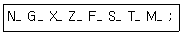
- N:전개번호, F:이송기능
- N:보조기능, F:이송기능
- N:전개번호, F:주축기능
- N:보조기능, F:주축기능
(정답률: 88%)
59. CNC 방전가공에서 전극용 재료의 구비조건으로 틀린 것은?
- 방전 가공성이 우수할 것
- 융점이 높아 방전시 소모가 적을 것
- 성형이 용이하고 가격이 저렴할 것
- 전기 저항값이 높고 전기 전도도가 작을 것
(정답률: 73%)
60. CNC 공작기계에서 서보 모터의 회전력을 테이블의 직선운동으로 바꾸어 주는 기구로 적절한 것은?
- 리드 스크루
- 사각 스크루
- 삼각스크루
- 볼 스크루
(정답률: 58%)